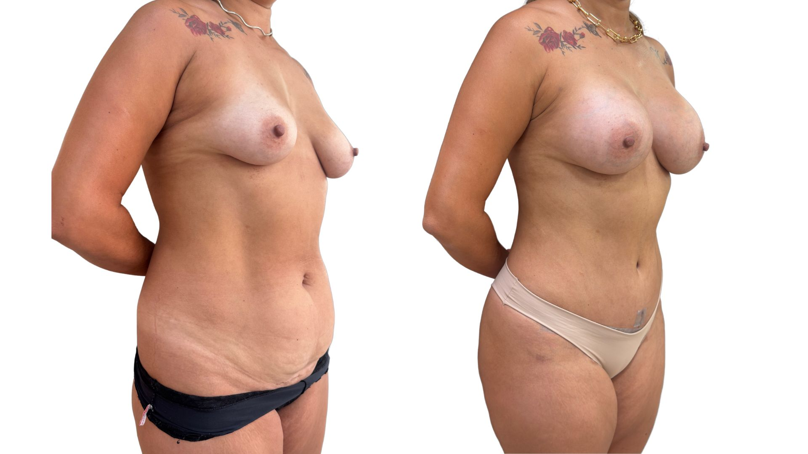

Queda e esvaziamento
Quando a mama perdeu sustentação e também há falta de preenchimento, especialmente no polo superior.
A associação pode fazer sentido quando há queda e perda de preenchimento, mas depende de pele, sustentação, medidas do tórax, cicatriz e segurança da cirurgia.
Atendimento na Clínica LIV Faria Lima, em Pinheiros. Consulta presencial, teleconsulta em casos selecionados e preparo pré-operatório integrado quando indicado.

A consulta diferencia queda, falta de volume e excesso de pele. Em alguns casos, mastopexia isolada é melhor; em outros, a prótese ajuda no preenchimento e na proporção.
Quando a mama perdeu sustentação e também há falta de preenchimento, especialmente no polo superior.
A prótese é escolhida conforme tórax, pele, base mamária e desejo da paciente — não apenas por tamanho.
O desenho da cicatriz e o tipo de montagem precisam conversar com a pele, o peso da prótese e a durabilidade do resultado.
Em algumas mamas, colocar volume sem tratar a pele pode aumentar peso e não corrigir a posição. Em outras, levantar sem prótese pode não entregar o preenchimento desejado. A indicação nasce desse equilíbrio.
A associação precisa equilibrar pele, cicatriz, volume, sustentação e segurança para evitar exageros ou indicação inadequada.
Quando a aréola e o excesso de pele são a principal questão, a mastopexia é o centro do planejamento.
Comparar com mastopexiaQuando falta preenchimento, a prótese pode complementar o reposicionamento.
Quando não há queda relevante, prótese isolada pode ser suficiente.
Ver prótese
A avaliação considera grau de queda, pele, posição das aréolas, medidas do tórax, volume desejado, cicatriz e segurança da associação cirúrgica.
Entender incômodo, rotina, objetivos e expectativas.
Avaliar anatomia, pele, cicatrizes possíveis e proporções.
Discutir técnica, alternativas, limites e associações.
Orientar exames, preparo, recuperação e orçamento.
Cirurgiã plástica, CRM-SP 191605 e RQE 110472, com formação pela UNICAMP, a Dra. Amanda avalia anatomia, pele, tecidos, cicatrizes, recuperação e segurança clínica. O plano é construído para responder à queixa da paciente com proporção, naturalidade e limites claros.
As consultas acontecem na Clínica LIV Faria Lima, em Pinheiros, próxima à Estação Pinheiros do metrô e com estacionamento pago no local. A jornada pode integrar consulta, exames, preparo clínico e avaliação cardiológica pré-operatória quando indicada.
Quando indicada, a avaliação cardiológica pré-operatória pode ser organizada na própria Clínica LIV com o Dr. Daniel Added, cardiologista formado pela USP e médico do InCor, CRM-SP 199104. Isso facilita exames, análise de risco e comunicação entre os profissionais envolvidos.
As fotos ajudam a ilustrar planejamento e cicatrização, mas cada resultado depende de anatomia, técnica, recuperação e cuidados pós-operatórios.

Imagem autorizada, educativa e sem promessa de resultado individual.
Imagens autorizadas e tratadas para privacidade. Não representam garantia de resultado individual.
A mesma queixa pode ter caminhos diferentes. A consulta define se o melhor plano é levantar, preencher, reduzir volume ou combinar técnicas com segurança e proporção.
Nos procedimentos cirúrgicos, o preparo inclui avaliação clínica, exames pré-operatórios e análise dos fatores de risco. Quando indicada, a avaliação cardiológica pré-operatória pode ser integrada à jornada na própria Clínica LIV com o Dr. Daniel Added, cardiologista formado pela USP e médico do InCor, CRM-SP 199104.
A mastopexia reposiciona e remodela a mama. A prótese acrescenta volume e preenchimento, especialmente no colo, quando isso faz sentido para a anatomia e objetivo da paciente.
Nem sempre. Quando há queda verdadeira e excesso de pele, a prótese isolada pode aumentar volume sem corrigir a posição da mama.
A escolha depende da base da mama, tórax, pele, desejo da paciente e segurança técnica. O objetivo é proporção, não apenas tamanho.
Geralmente pode ser, porque a mastopexia trata excesso de pele e reposicionamento. O desenho é definido conforme o grau de queda.
Como toda cirurgia com implante e remodelação de tecidos, pode haver necessidade de acompanhamento e eventuais revisões ao longo da vida.
Ao enviar uma mensagem, a equipe entende o que você deseja avaliar, orienta o melhor formato de consulta e informa disponibilidade, valores, nota fiscal e próximos passos com discrição e clareza.
A equipe entende sua queixa, sua prioridade e o procedimento de interesse.
Você recebe informações sobre consulta presencial, teleconsulta inicial em casos selecionados, agenda e valores.
Na consulta, a Dra. Amanda avalia técnica, limites, segurança, recuperação e próximos passos.
Envie uma mensagem para contar sua queixa e receber orientação sobre consulta, disponibilidade, valores e próximos passos.